| ACCUEIL |
NOUVELLES |
QUI NOUS SOMMES |
NOTRE TRAVAIL |
NOUS SOUTENIR |
MEDIAS |
PARTENAIRES |
CONTACT |


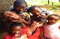 Oriane Pledran : Bali 2012 ...read more
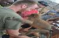 Summer projects always attract groups of volunteers from all over the world. ...read more
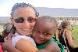 Teaching children and reaching youths through informal and formal learning methods has been a successful way to assist children. ...read more
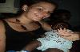 After high school graduation, Annelen decided to travel to Cameroon to take on a volunteering experience before continuing to the university in the year after. Spending 3 months in Cameroon was an amazing experience for her where she didnot only teach children in schools, but had the chance to discover the way of life in Cameroon via the food, culture, language, religion and more... ...read more
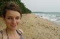 Working with people with various disabilities has always been a challenging task for most social workers. This time, Anja S from Switzerland took over the challenge and spent an enriching time in Cameroon. ...read more
Katie Grammer (United Kingdom) March 2011 ...read more
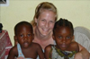 Fabienne who works as a public relations agent in Switzerland decided to take a break off work to travel to Cameroon to make a difference through volunteering. ...read more
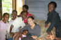 Christine and Julia recently graduated from high school they both decided to use their summer holidays to travel to Cameroon to assist Hope Foundation with its projects as volunteers. ...read more
Stefan Brunner is studying Environmental System Science at the Karl Franzens University in Graz, Austria. ...read more
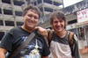 Dragos Costache and Vilcan Dan, two aspiring graduate political science students spent one month in Cameroon during which they researched into the plight of the Baka pygmies, a minority group in the country. One day after their arrival, they were in for a rough ride to a no-light, no-water and mosquito-infested locality known as Mindourou. ...read more
While her mates were making their first steps as freshmen in University, Emily POULTON was taking a bolder and commendable step. She was leaving her native Canada at the age of 18 to spend 6 months working benevolently in Cameroon for the needy, as a Hope Foundation Volunteer. ...read more
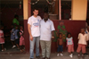 Lukas Burkhard a Swiss national took time off his work in the financial sector of his country to travel to Cameroon and work as a Hope Foundation Volunteer. ...read more
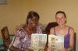 Apart from English and French which are the official languages used in Cameroon schools, other languages such as Spanish, Latin and German are taught in many schools to enable Cameroonian youths to enhance their talent in international languages. ...read more
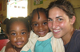 Rosie Stuarts when applying to volunteer with Hope Foundation was interested in a number of live changing projects but at the end she finally decided to dedicate her time and knowledge in serving children through education. ...read more
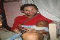 Andreas Karner from Austria was this time around the volunteer to be hosted by Hope Foundation. He is a young man who has been involved in numerous social projects back in Austria and work as an educator while persuing his studies. ...read more